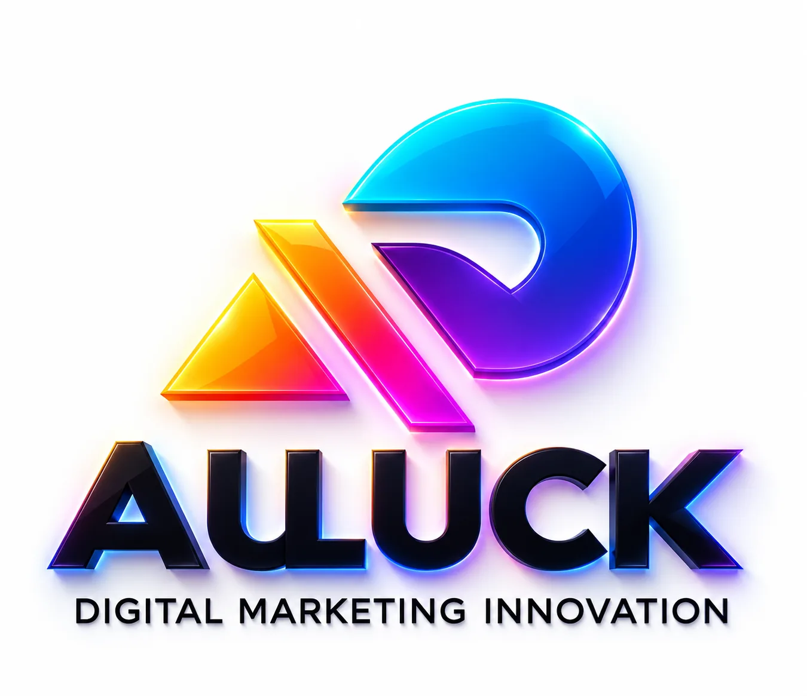
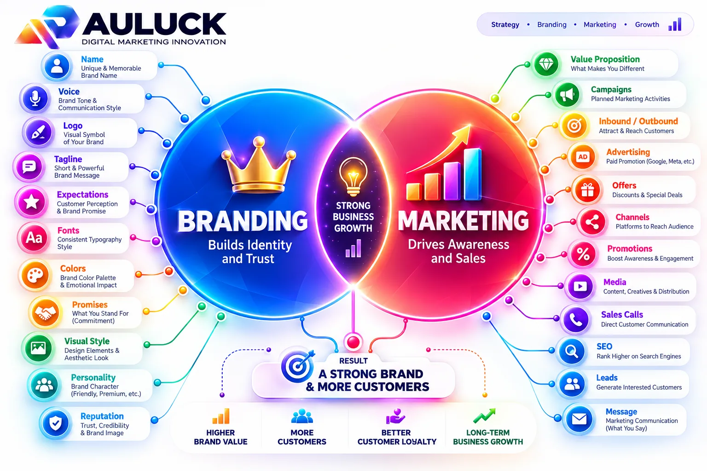
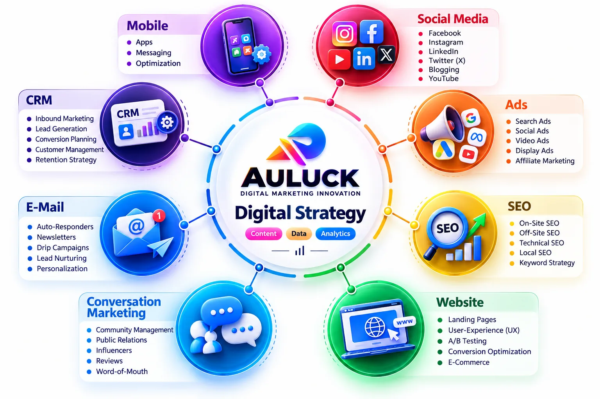
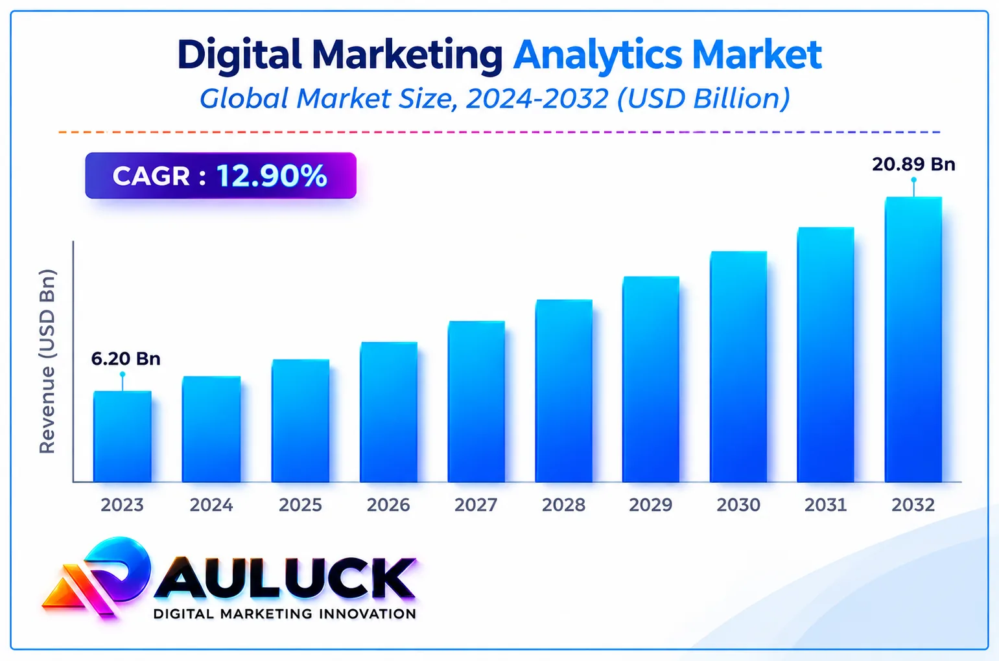
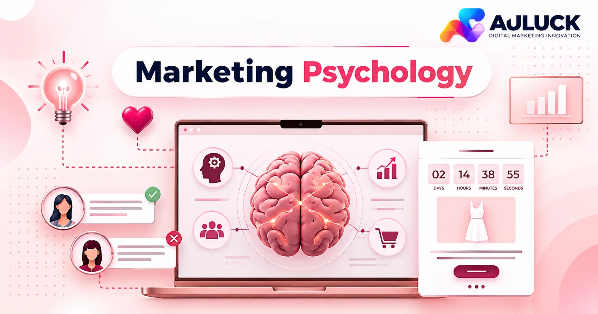
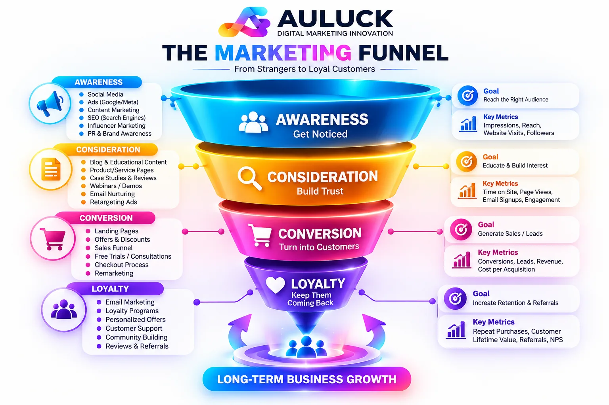
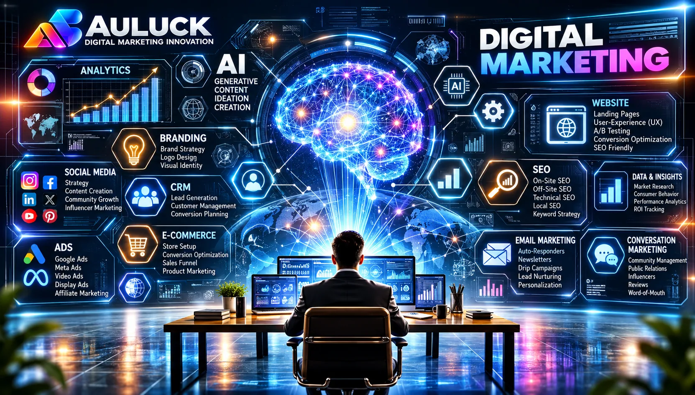
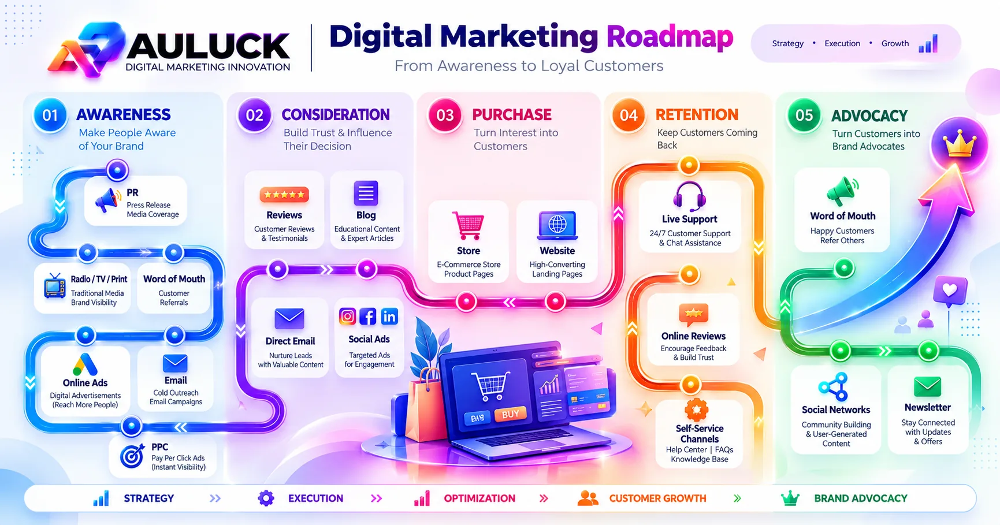

Website & E-Commerce
Business websites, custom builds, Shopify, WooCommerce, landing pages, redesign and maintenance.
AULUCK Digital turns attention into trust and trust into growth, with strategic marketing, premium branding and AI-powered execution.

People buy the business that feels trustworthy, premium and memorable. AULUCK is built around that.
Brands are remembered when they emotionally hold attention.
Get noticed by the right people, in the right place.
Look credible, premium and clear before anyone contacts you.
Turn interest into enquiries, sales and customers.
Build systems that keep compounding, not one-off campaigns.
20 capabilities. Pick one layer or build the complete growth system.
Business websites, custom builds, Shopify, WooCommerce, landing pages, redesign and maintenance.
Instagram, Facebook, LinkedIn, X, Pinterest, complete social strategy and community management.
Channel management, Shorts, long-form, SEO, strategy, audits and YouTube advertising.
Local, technical, on-page, e-commerce, national, international and Google Business Profile SEO.
Meta, Google, YouTube, LinkedIn, retargeting, performance systems and tracking setup.
Strategy, calendars, blogs, website copy, ad copy, copywriting and video content.
Posts, carousels, banners, flyers, brochures, presentations, reels, promotional videos and campaigns.
Logo design, brand identity, brand strategy, visual identity, guidelines and creative campaigns.
Lead generation, B2B, funnels, landing pages, conversion optimization and sales strategy.
Email marketing, campaigns, WhatsApp marketing, automation and lead nurturing.
CRM setup, management, marketing automation, lead automation and business workflows.
Marketing research, competitor analysis, audits, analytics and monthly reporting.
Setup, optimization, local ranking strategy and monthly management.
E-commerce marketing, e-commerce SEO, e-commerce ads, product listing optimization and conversion optimization.
Influencer research, selection, negotiation, campaign management and complete influencer campaigns.
Print creatives, campaign planning, local promotion, events, ground promotion and hoardings.
AI video, music, full movie production and AI chatbot development + maintenance.
Business, digital marketing, strategy, brand, sales and growth consulting.
Domain, hosting, business email, SSL, analytics, Search Console, Tag Manager and tracking.
Digital business setup, brand + website, e-commerce setup and complete digital presence.
Chirag Auluck is a modern authority engineer, focused on how businesses are perceived online. Many agencies chase traffic, content or ads. He starts with a different question: why do people trust some brands faster than others?
That focus on premium positioning, buyer psychology and perception became the foundation of AULUCK Digital. The aim: help businesses stop looking ordinary.
Real strategic authority, not loud marketing. Businesses that feel premium, established and trusted, so they become category leaders.
A practical guide to marketing, branding, psychology, funnels, AI, careers and the digital marketing roadmap, written to be understood without prior expertise.
These terms are often used interchangeably, but they solve different business problems. Marketing is the broader discipline of creating, communicating and delivering value. Digital marketing is the digital operating layer of marketing. Branding shapes the meaning and memory attached to the business. Advertising is paid distribution. Sales converts qualified interest into commercial transactions. A strong business does not choose one and ignore the others; it designs the relationship between them.

Marketing begins with the market: who the customer is, what problem matters, what alternatives exist, what creates demand, how the offer is positioned, and how value reaches the customer. It includes research, segmentation, positioning, pricing, distribution, communication and retention.
Think of marketing as the commercial strategy around demand. Digital channels are tools inside that strategy—not the strategy itself.
Digital marketing applies marketing principles through digital channels such as search, social media, websites, email, marketplaces, analytics and paid media. Its advantage is measurability: businesses can observe traffic, engagement, leads, conversion events and customer behavior.
The important question is not “Which platform is trending?” but “Which digital channel is appropriate for this customer journey?”
Branding is the deliberate construction of identity, meaning, associations and expectations. It includes name, visual identity, verbal identity, positioning, experience, reputation and consistency. A logo is an asset inside branding; it is not the complete brand.
Branding answers: “What should people remember, believe and feel when they encounter this business?”
Advertising purchases attention or distribution. Sales turns relevant interest into a transaction through qualification, persuasion, negotiation, objection handling and closing. A business can have excellent ads with weak sales, or excellent salespeople with weak demand generation.
The operating model must connect attention → credibility → conversation → conversion → retention.
| Discipline | Primary Question | Primary Output | Typical Measures |
|---|---|---|---|
| Marketing | Where is demand and what value should we offer? | Market, offer, positioning, distribution plan | Demand, share, acquisition efficiency, retention |
| Digital Marketing | How do we reach and move people online? | Channels, campaigns, content, search, media | Reach, traffic, leads, CAC, conversion |
| Branding | What should the business mean in the customer's mind? | Identity, narrative, reputation, experience | Recall, trust, preference, branded search |
| Advertising | How do we buy targeted attention now? | Paid campaigns and creative distribution | CPM, CPC, CTR, CPL, ROAS |
| Sales | How do we convert qualified demand? | Sales conversations, proposals, closures | Close rate, sales cycle, AOV, win rate |
| Element | Short-term Role | Long-term Role | Common Mistake |
|---|---|---|---|
| Brand Identity | Creates coherence and recognition | Builds memory and differentiated meaning | Treating the logo as the entire brand |
| Content | Earns attention and demonstrates expertise | Builds an owned library of authority | Posting without a strategic objective |
| Paid Media | Accelerates distribution | Produces a scalable acquisition engine when economics work | Scaling before the offer and funnel are validated |
| Website | Explains and converts | Becomes a durable digital asset | Optimising aesthetics while ignoring conversion paths |
| Sales Process | Converts active demand | Creates predictable revenue operations | Sending every lead through the same pitch |
Strategy defines the choices that make the business coherent: target customer, category, positioning, offer, message, channel priorities, economics and measurement. Tactics are execution choices such as a specific reel, Google Ads campaign, landing page or influencer collaboration. A tactic can be creative and still be strategically wrong. The sequence below makes that hierarchy visible.


Map customer problems, competitors, demand signals, price expectations and buying context.
Decide what you are known for, for whom, and why your offer is credible.
Turn expertise or inventory into a clear commercial offer with a reason to act.
Choose channels, content, paid media, partnerships and conversion assets.
Track the bottleneck, run controlled tests and allocate resources to what works.
| Strategy Layer | Decision | Example Question | Output |
|---|---|---|---|
| Market | Who matters most? | Which customer segment has the problem, urgency and ability to pay? | ICP / audience definition |
| Positioning | Why you? | What specific value or perception should you own? | Positioning statement |
| Offer | What exactly is bought? | What outcome, deliverables, proof and terms make the offer easy to understand? | Offer architecture |
| Channel | Where does attention come from? | Where does the target audience already research, compare or communicate? | Channel mix |
| Message | What must be understood? | What problem, promise, proof and action should the customer take away? | Messaging hierarchy |
| Measurement | What indicates health? | Which metrics connect marketing activity to commercial outcomes? | KPI tree |
A marketing system cannot be judged only by reach or lead volume. Suppose a business generates 100 leads at a cost of ₹200 each. That produces ₹20,000 of acquisition spend. If only five become customers, the acquisition cost per customer is ₹4,000. Whether that is healthy depends on contribution margin, repeat purchase, customer lifetime value and fulfilment cost.
Marketing becomes a business system when attention metrics are connected to financial metrics. That is why strategy should eventually flow into CAC, conversion rate, average order value, gross margin, payback period and retention—not vanity metrics alone.
Business psychology is not manipulation. At its strongest, it helps a business design communication around how humans actually perceive information: attention is limited, uncertainty is uncomfortable, social proof influences risk perception, and people compare options using mental shortcuts. Good marketing makes the value easier to understand; it does not require deception.

| Psychology Principle | What Happens | Ethical Marketing Application | What to Avoid |
|---|---|---|---|
| Clarity | People process simpler messages faster. | Use one strong promise per communication unit. | Dense copy with multiple competing CTAs. |
| Social Proof | People use credible evidence to reduce uncertainty. | Show genuine reviews, outcomes, logos or case studies with context. | Fabricated testimonials or invented results. |
| Authority | Expertise signals can reduce perceived risk. | Teach clearly, publish evidence and demonstrate competence. | Fake credentials or exaggerated expertise. |
| Scarcity | Limited availability can increase decision urgency. | Use real capacity or deadline constraints. | Fake countdowns or artificial scarcity. |
| Consistency | Repeated visual and verbal cues strengthen recognition. | Maintain consistent brand assets and message structure. | Changing identity every few days. |
| Loss Aversion | People often react strongly to potential losses. | Explain the realistic cost of inaction. | Fear-based exaggeration or panic tactics. |
Illustrative diagnostic model—not measured market data. The point is to show the order of thinking: if a buyer does not understand the offer, more persuasion usually does not solve the core problem.
Ask five people who recently saw the business: “What does this company do?”, “Who is it for?”, and “Why would someone choose it?” If answers are inconsistent, the issue may be positioning or message architecture rather than lack of content volume.
Brand strength is not created by visual polish alone. The identity, offer, customer experience and repeated message must tell the same story.
A useful funnel describes what the customer must believe or do at each stage. The exact stages vary by business, but the logic is stable: a person becomes aware, develops interest, evaluates credibility, takes an action, buys, and—when the product deserves it—returns or recommends.

| Stage | Customer State | Marketing Job | Useful Assets | Primary Metric |
|---|---|---|---|---|
| Awareness | Problem or brand is newly noticed | Earn relevant attention | Reels, search results, creator content, PR | Reach / qualified impressions |
| Interest | Customer sees relevance | Increase understanding | Carousels, videos, educational pages | Engaged visits / watch time |
| Consideration | Customer compares options | Reduce risk | Case studies, proof, FAQs, demos | Lead rate / inquiry quality |
| Conversion | Customer is ready for action | Remove friction | Landing page, offer, sales call, checkout | CVR / close rate |
| Retention | Customer evaluates experience | Create repeat value | Onboarding, support, CRM, loyalty | Repeat rate / LTV / referrals |
| Funnel Problem | Possible Signal | First Diagnostic | Typical Fix Direction |
|---|---|---|---|
| Low attention | Weak reach or poor click-through | Review hook, targeting and distribution | Improve creative relevance and channel-market fit |
| High attention, low leads | Traffic but little action | Review offer and conversion path | Strengthen CTA, proof, landing page and qualification |
| Many leads, low closes | Sales pipeline stalls | Review lead quality and sales process | Improve qualification, offer clarity and follow-up |
| Customers do not return | Weak repeat purchase | Review customer experience and value delivery | Improve onboarding, fulfilment and retention loops |
A mature content system gives each asset a job. Some content creates discovery; some educates; some proves competence; some handles objections; some creates conversion intent. The goal is not to publish everything everywhere. The goal is to build a repeatable message system that fits the audience and business model.
| Content Pillar | Purpose | Example Formats | Business Role |
|---|---|---|---|
| Insight | Teach a useful idea | Carousels, explainers, threads | Authority and discovery |
| Proof | Demonstrate ability | Case studies, before/after, process | Trust and consideration |
| Opinion | Clarify point of view | Commentary, founder posts, videos | Positioning and differentiation |
| Product | Explain offer value | Demos, service pages, FAQs | Conversion |
| Community | Build relationships | Replies, lives, stories, polls | Retention and advocacy |
AI can compress the time required for research, ideation, copy drafts, creative variations, data analysis, customer support, automation and rapid prototyping. The commercial opportunity is not simply “use AI”; it is to redesign the workflow so repetitive production becomes faster while human judgment stays focused on positioning, quality control, customer understanding and business decisions.

| AI Area | What AI Can Assist With | Human Responsibility | Business Opportunity |
|---|---|---|---|
| Research | Synthesis, clustering, first-pass summaries | Validate facts, context and strategic relevance | Faster insight production |
| Creative | Concepts, scripts, image/video variations | Brand fit, originality, legal/commercial review | Higher creative throughput |
| Automation | Routing, notifications, repetitive workflows | Process design, governance, exception handling | Lower operational friction |
| Analytics | Pattern discovery, summaries, anomaly prompts | Metric definitions and business interpretation | Faster decision support |
| Customer Experience | FAQ assistants, first-line support, personalization | Escalation rules, privacy, tone and quality assurance | More scalable service operations |
| Product Development | Prototypes, specifications, simulations of workflows | Requirements, testing and market validation | Shorter iteration cycles |
Brief → research → generate → review → humanise → publish → measure → learn.
Skipping review may increase output volume while lowering trust. The advantage comes from combining machine speed with clear quality standards and a feedback loop.
The field is broader than “social media posting.” A person can specialise in performance marketing, search, content, CRM, analytics, creative production, brand strategy, sales enablement or AI operations. The strongest career path is usually a stack: one core skill, one adjacent skill, business literacy and the ability to show evidence of work.
| Role | Core Skills | Typical Deliverables | Useful Proof of Skill |
|---|---|---|---|
| SEO Specialist | Search intent, on-page, technical SEO, analytics | Audits, content plans, optimisation reports | Before/after visibility and technical fixes |
| Performance Marketer | Paid media, creative testing, tracking, unit economics | Campaigns, dashboards, testing plans | Well-documented experiments and efficiency analysis |
| Content Strategist | Research, editorial planning, copy, distribution | Content systems, calendars, scripts | Consistent content linked to goals |
| Brand Strategist | Positioning, narrative, identity systems, research | Brand strategy, messaging, identity direction | Strategic rationale and coherent brand system |
| Growth / Marketing Manager | Cross-channel strategy, analytics, coordination | Growth plans, KPI trees, experiments | Business case studies and decision logs |
| AI Marketing Operator | Prompting, automation, creative systems, QA | AI workflows, agents, content pipelines | Working systems and documented productivity gains |
| Freelancer / Consultant | One core skill + sales + project management | Client projects, audits, retainers | Portfolio, testimonials and clear offers |
| Agency Founder | Strategy + sales + delivery + finance | Service packages, team systems, client growth | Process, recurring revenue and retained clients |
Learn one channel deeply, build small projects and learn business vocabulary.
Choose a high-value capability and build repeatable workflows around it.
Own outcomes, communicate with clients or teams and read performance data.
Connect market, brand, acquisition, sales and retention into one system.
Brand building is a sequence of decisions, not a single design day. A practical roadmap starts by understanding the market, then codifies identity, builds the digital foundation, creates a repeatable communication system, launches acquisition and finally compounds trust through customer experience.

Audience, competitors, category, offer, business economics and positioning inputs.
Name, identity direction, positioning, messaging, offer structure and brand rules.
Website, profiles, content templates, conversion assets, tracking and sales materials.
SEO, social content, paid campaigns, partnerships, outbound and authority content.
Identify bottlenecks, improve conversion, strengthen retention and scale validated channels.
| Phase | Primary Deliverables | Management Question | Exit Condition |
|---|---|---|---|
| Discover | Research, audience, competitor and commercial baseline | Do we understand the market and the buyer? | Clear problem, audience and baseline |
| Define | Positioning, identity, message and offer | Can someone explain the business in one sentence? | Consistent strategic direction |
| Build | Digital assets, content system, tracking | Can the business communicate and convert consistently? | Operational digital foundation |
| Distribute | Organic, paid and relationship channels | Which channels create qualified demand? | Evidence of repeatable acquisition signals |
| Optimise | Experiments, retention, budget allocation | Where is the highest-leverage bottleneck? | Improving commercial efficiency |
This is an illustrative planning graphic, not a performance guarantee. The order matters more than the percentages: diagnose first, build the system second, scale what has evidence.
The fastest way to waste a marketing budget is to solve the wrong problem. These questions are designed to create enough context for a business owner to ask a better question before choosing a channel, package or campaign.
No. Branding shapes identity, meaning, recognition and expectations; marketing manages the broader system of demand, value communication and distribution. Branding supports marketing by making the business easier to recognise and remember.
No. Digital marketing includes search, websites, analytics, email, paid media, social platforms, marketplaces, CRM and other digital touchpoints. Social media is one channel inside a larger system.
Start with strategic clarity. Define the audience, problem, offer and positioning first. Then create the brand identity and digital assets that communicate that strategy. Launching traffic before the message and conversion path are clear can create expensive noise.
A visual identity can be produced relatively quickly; brand strength takes longer because memory, trust and reputation accumulate through repeated exposure and customer experience. Timelines should therefore separate “asset production” from “market perception.”
Reach is an attention metric. Sales depend on relevance, offer quality, trust, friction, lead quality and the sales process. A business can have strong reach with a weak conversion system.
Not automatically. Paid and organic solve different distribution problems. Organic can compound audience and authority; paid can accelerate targeted distribution. The right choice depends on economics, goals, audience behaviour and the maturity of the offer.
A funnel is the sequence of steps a person moves through from first awareness to consideration, conversion and—ideally—retention. It helps identify where demand is being lost so the business can fix the bottleneck instead of adding random tactics.
Psychology helps explain attention, perception, trust, comparison, decision friction and memory. Ethical application improves clarity and relevance. It should not be used to fabricate proof, hide important terms or pressure people with false claims.
AI can automate or accelerate parts of research, production, analysis and operations. It does not remove the need for market judgment, positioning, commercial thinking, taste, verification and relationship management. The role is more likely to evolve toward higher-leverage work.
There is no universal “best” skill. Demand varies by industry and role. A practical approach is to build one core capability deeply—such as SEO, performance marketing, content, analytics, creative production or CRM—and pair it with communication, AI fluency and commercial understanding.
The transition happens when work becomes systemised: defined offers, pricing logic, briefs, SOPs, quality control, reporting, sales processes and delegated delivery. An agency is not simply “more clients”; it is a more repeatable operating system.
Start with a small KPI tree: qualified traffic or reach, enquiries/leads, conversion rate, customers, revenue and contribution economics. Add channel-specific metrics only when they help explain one of those commercial outcomes.
Research → Position → Build → Communicate → Convert → Retain → Measure → Improve. That loop is the foundation. Platforms change, creative formats change and AI tools change, but the business still needs a clear market, a credible offer, a coherent brand and a measurable path to revenue.
From a one-minute AI creative to a full AI-produced film, AI is a production system here, not a gimmick.
Basic ₹1,000 · Medium ₹2,000 · Premium ₹3,000.
Story-driven AI production with increasing levels of visual and post-production complexity.
Story → Script → Characters → Scenes → AI Video → Voice → Music → Sound → Editing → Final Film.
Per music project/track according to scope and production requirements.
FAQ, lead capture, knowledge base, qualification, business logic and CRM/API integrations.
Maintenance and management. API/token usage, hosting and third-party charges are separate.
An optional game: finish the timer and claim a premium logo design reward.
The final signed agreement or quotation governs each engagement.
All project requirements, business details, target audience insights, and changes must be provided in clear written format (Email/WhatsApp). Verbal instructions will not be considered official execution parameters.
The Agency maintains a strict zero-tolerance policy against any form of verbal abuse, shouting, profanity, egoistic intimidation, or unprofessional language directed at the agency owner or team members.
Any major breach of professional conduct, unreasonable harassment, or violation of communication boundaries gives the Agency the right to terminate the contract immediately, subject to the applicable agreement and law. Paid amounts may be non-refundable where execution, committed resources, or billable work have already been deployed.
The Agency and its team possess operational autonomy to execute social media, SEO, and marketing strategies based on industry standards. Clients cannot micromanage day-to-day execution tasks outside the agreed approval process.
Performance reports, analytics reviews, and data breakdowns will be shared on the scheduled reporting basis agreed for the service, normally once or twice a month for standard retainers. Hourly or daily tactical justifications are outside the scope of standard retainer agreements unless separately agreed.
Digital marketing, ad campaigns, and SEO involve external platform variables. Campaigns, organic reach, and ad spend are subject to market responses; trial strategies can occasionally underperform or fail. Results are variable, and market failure alone does not constitute agency negligence.
Where the Agency recommends a minimum advertising budget for scale (for example, INR 100,000+ where advised), the client is responsible for allocating the agreed budget. If the client does not provide the recommended budget, the Agency is not responsible for the resulting limitation in inbound customer acquisition or lead volume.
If the client alters their core product line, business model, target market, target niche, or positioning during an active campaign cycle, previous growth data may no longer be directly comparable and the Agency is not responsible for stagnant metrics caused by that material change.
Social media growth, brand building, and SEO require sustained time and patience. Clients acknowledge that brand authority and organic visibility cannot be established overnight.
No extra, out-of-scope, or uncontracted tasks will be executed. Any additional work requested outside the agreed package will require a separate written commercial addendum or quotation.
Posting false, misleading, malicious, or defamatory reviews on Google, social media platforms, or public forums without verified cause may lead the Agency to pursue appropriate remedies available under applicable law.
Any legal disputes, breach of agreement claims, or other proceedings shall be handled according to the jurisdiction and dispute-resolution terms stated in the applicable signed agreement and as permitted by law.
In the event of unverified public accusations, financial damage attempts, or reputational harm, the Agency reserves the right to pursue lawful remedies, including claims for damages or compensation where legally available.
All custom strategies, graphic frameworks, landing page structures, and creative assets designed by the Agency remain the intellectual property of AULUCK Agency until all dues are fully cleared, unless the applicable quotation/agreement states otherwise.
The Agency is not liable for performance dips, ad account suspensions, algorithmic shifts, platform outages, server crashes, or other events caused by third-party platforms such as Meta, Google, WordPress or by unforeseen force majeure events.
Professional communication must be conducted through designated official agency support emails or numbers during designated working hours. Personal intimidation or repeated harassment outside agreed support channels may result in communication suspension or termination as permitted by the agreement.
Clients acknowledge that social media marketing alone cannot sustain every business without supporting infrastructure such as a functional website, suitable sales processes, offline execution where relevant, and proper conversion funnels.
Payment of the initial invoice or commencement of project discussions signifies that the client has received and accepted the applicable Terms & Conditions, subject to the final written quotation or signed agreement governing the engagement.
All project requirements, business objectives, and creative inputs must be provided in writing through official channels. Any delay from the client in providing necessary content, approvals, or credentials such as Meta, Google or website access may extend the project timeline by an equivalent or reasonable duration.
All third-party expenses—including hosting, domain registration, premium plugins, stock assets, software subscriptions, influencer collaborations, and advertising budgets—are the client's financial responsibility and are excluded from agency service retainers unless specifically included in writing.
The client warrants that all content, logos, trademarks, data and materials provided to the Agency are lawfully usable by the client and do not knowingly infringe third-party copyright or intellectual-property rights.
Both parties agree to maintain appropriate confidentiality regarding sensitive business operations, proprietary strategies and customer data, with reasonable security obligations and any additional NDA terms where applicable.
Account credentials, assets, and project deliverables will be handed over to the client after outstanding dues and pending invoices are cleared in full, subject to third-party platform policies and the applicable agreement.
The Agency may showcase completed creative work, designs, and case studies in its portfolio and promotional channels unless the client explicitly opts out in writing before project launch or the applicable agreement provides otherwise.
Clients are requested not to directly solicit, hire, or contract agency employees, freelancers, or team members during the contract term and for 12 months after termination where such restriction is legally enforceable and agreed in the applicable contract.
If any individual clause or provision of the agreement is held to be invalid or unenforceable, the remaining provisions will continue to the extent permitted by law without invalidating the entire agreement.
The applicable written agreement and quotation supersede prior informal discussions to the extent of any conflict. Any modifications or amendments should be confirmed in writing by authorized Agency representatives.
Official communications, notices, and customer-support inquiries must be routed through designated official email addresses and support channels. Support routing may be updated periodically for privacy, security and operational reasons.
Digital marketing, advertising campaigns and social media growth are subject to external platform algorithms, market demand and budget limitations. Results can vary and experimental strategies may underperform or fail. Organic brand building requires sustained time and patience.
If a client materially changes their core product line, target niche, business model or campaign direction mid-cycle, historical performance metrics may no longer be comparable, and the Agency is not liable for stagnant growth attributable to that change.
False, malicious or knowingly unverified defamatory statements may result in the Agency pursuing remedies available under applicable Indian law. Any dispute jurisdiction will be determined by the applicable written agreement and governing law.
Enterprise, multi-location, complex automation, large-scale AI production and integrated projects may require custom quotations and bespoke commercial terms.
Ready to scale your business with premium authority systems and AI-powered growth?
All prices are starting prices. Final pricing depends on scope, deliverables and complexity.
Pricing note: Ad spend, influencer payouts, printing, media buying, domain, hosting, premium software, APIs, subscriptions, travel and third-party costs are separate unless included in a written quotation.